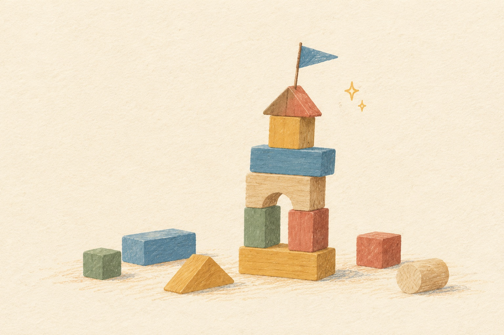

给女演员的三页 · 二〇二六年十月
第一页 · 这是什么
两件给桐铃玩的东西。
看完这一页只要记住两个名字。为什么做、怎么做，在后两页。
 桐铃小测试粉丝答 8 道题，得一张「你是哪种桐铃」的卡。题目从超话里她们自己聊的话里来，每周一套。女演员点头才发。
桐铃小测试粉丝答 8 道题，得一张「你是哪种桐铃」的卡。题目从超话里她们自己聊的话里来，每周一套。女演员点头才发。

桐铃 vibecoding粉丝随口说一句「想要一个追剧倒计时」，AI 当场做成能玩的小网页，挂在超话里，署那个粉丝的名。女演员每周点名一个。不碰脸，不碰声音页面里没有女演员的照片；会出声的只是浏览器念字。
不点头，不发每一样东西发出去之前，都要女演员本人点一下。
每周两分钟周四点一个头，周日点一个名。其余由泡泡团队和 AI 来。
两件东西都已经做成能用的网页，点上面的画就能打开试。里面的人数和留言是演示用的假数据。
小陈出主意，泡泡见人 · 2026-10-24。本页与站点首页内容一致，只是去掉了导航和数据。